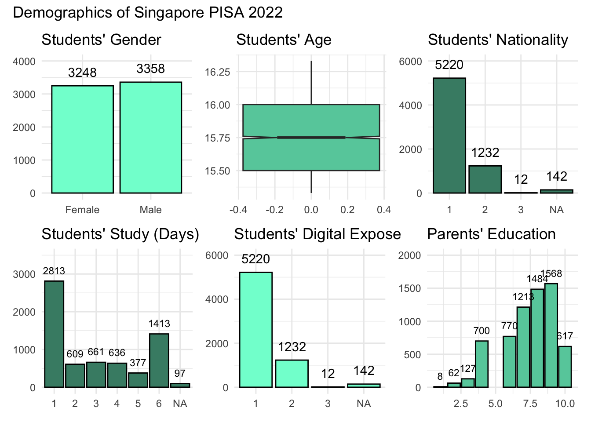
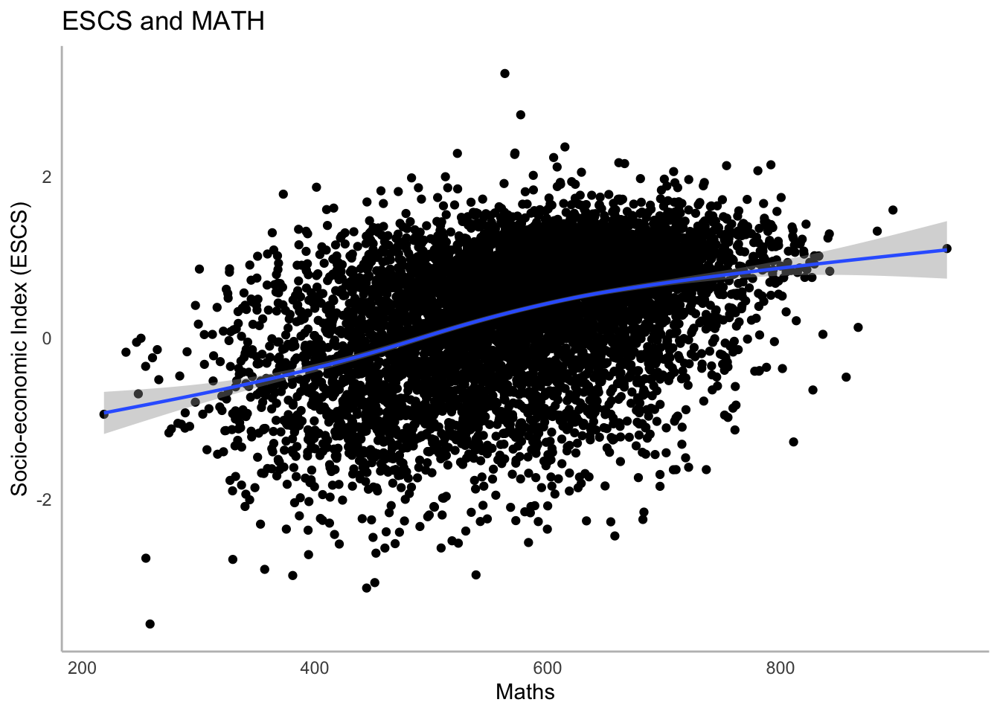
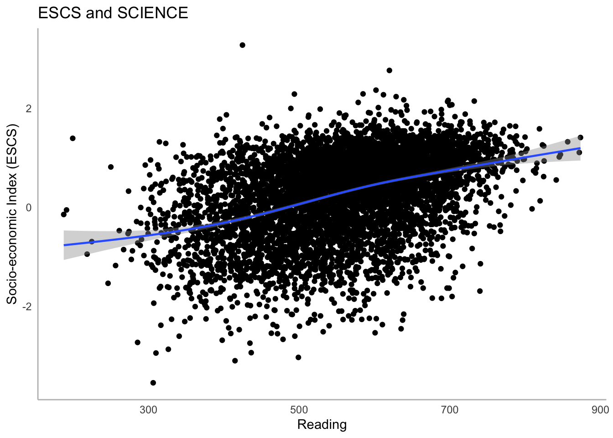
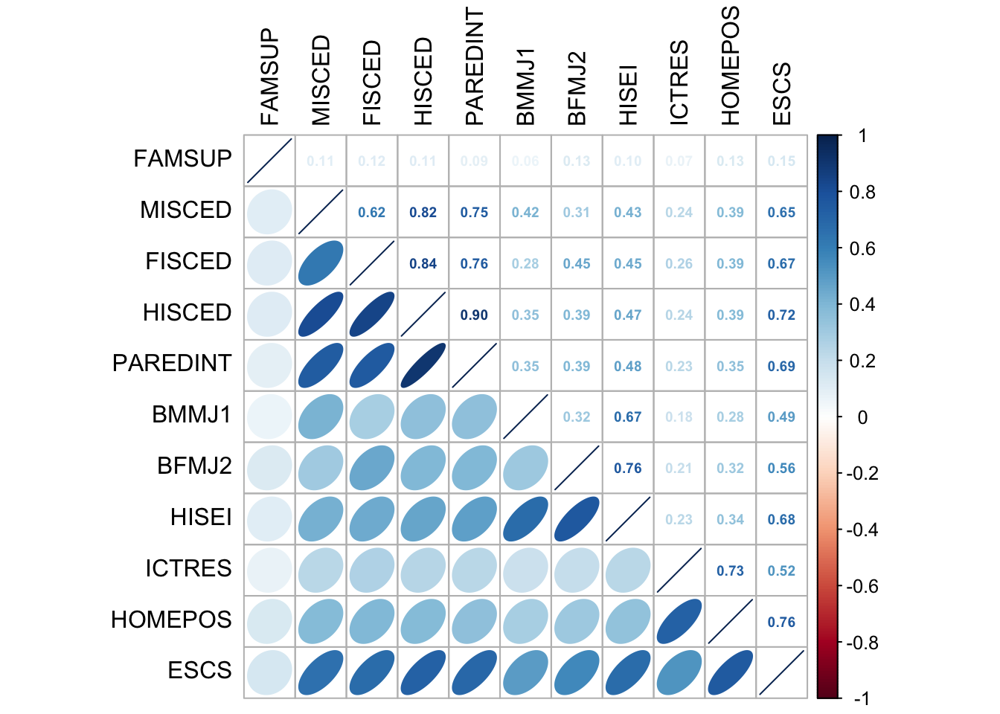
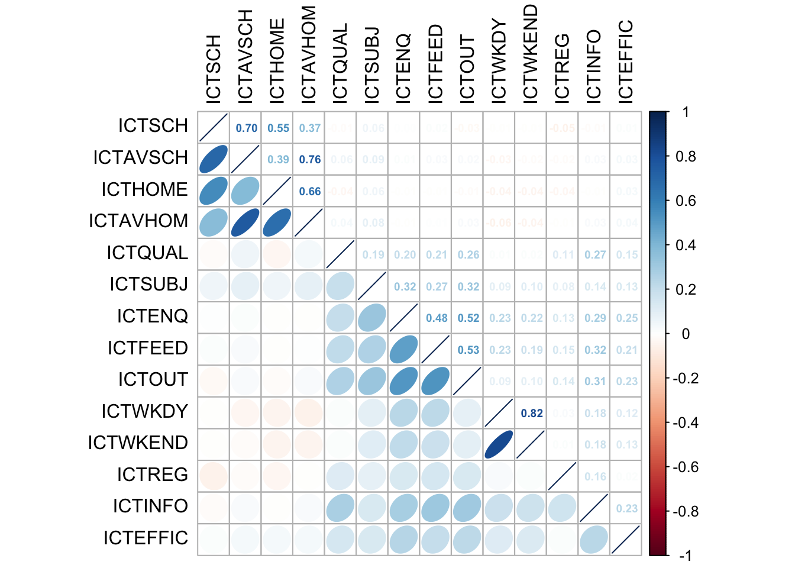
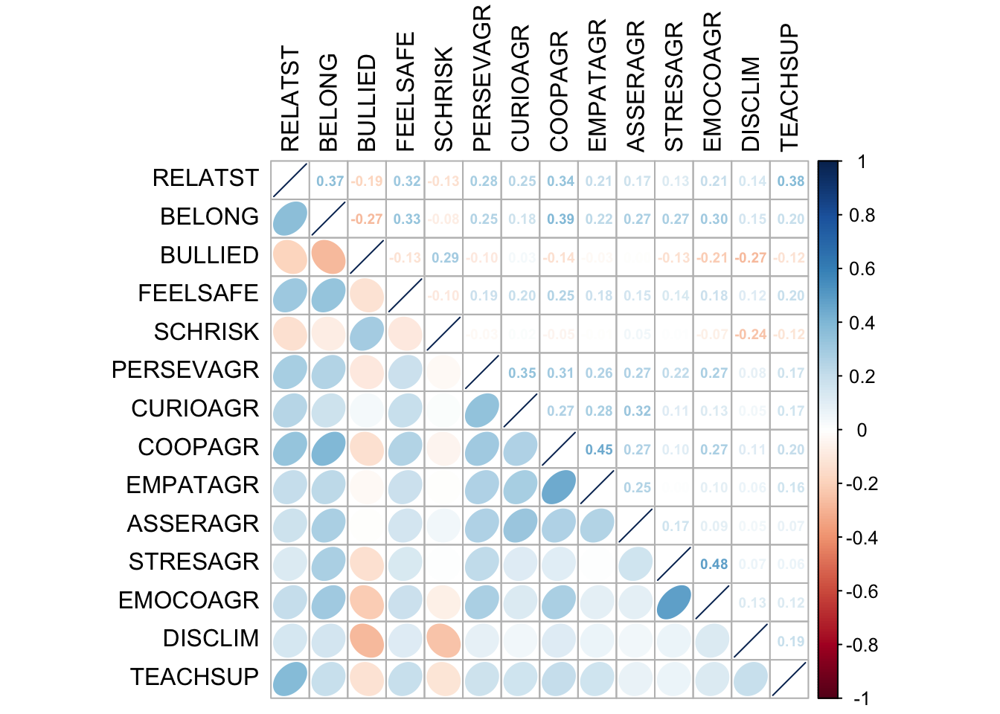
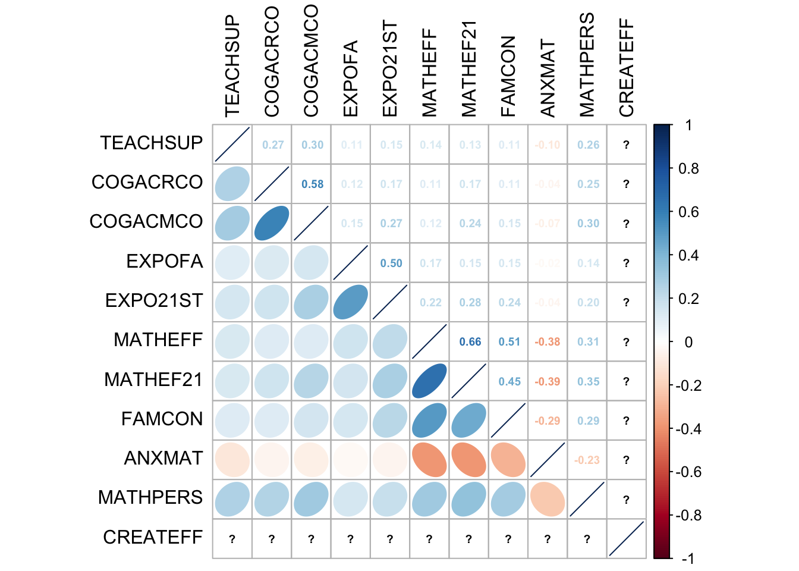
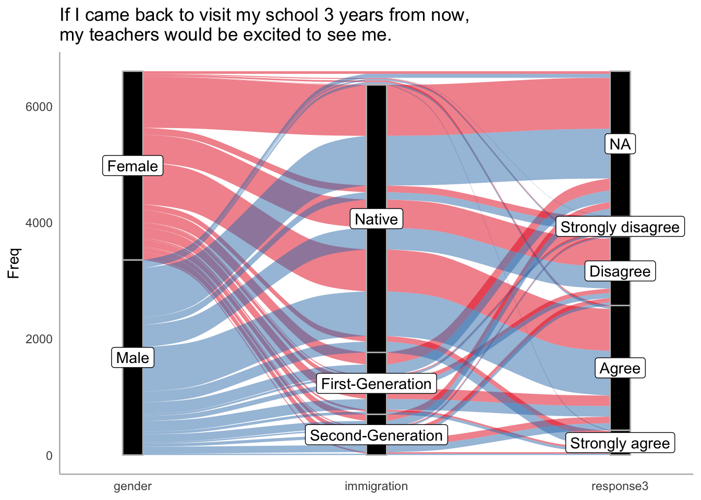
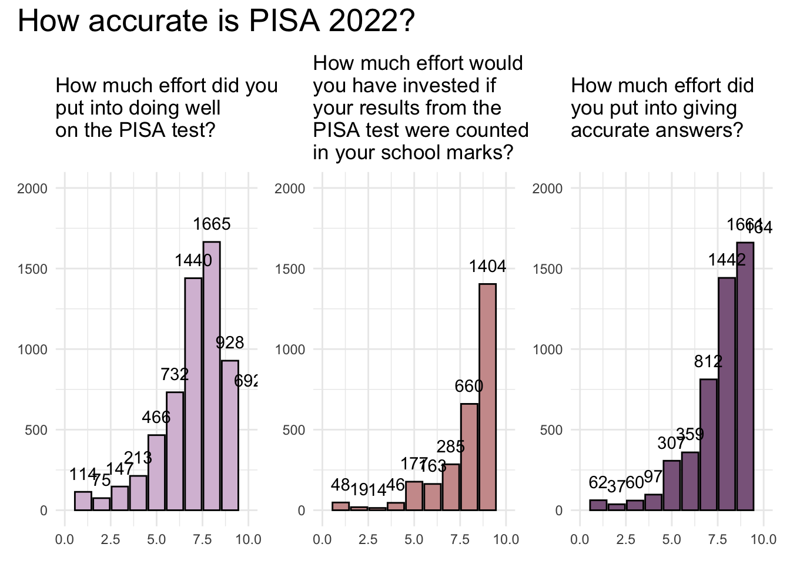

pacman::p_load(ggiraph, ggrepel, ggridges, ggdist, ggalluvial, reshape2, corrplot, DT, likert, plyr, kableExtra, patchwork, ggthemes, hrbrthemes, haven, tidyverse, dplyr) OECD PISA Global Education

1. Learning Objectives
The Organisation for Economic Co-operation and Development (OECD) Programme for International Student Assessment (PISA) is a global education survey conducted to examines what students know in mathematics, reading and science, how well students can solve complex problems, think critically and communicate effectively. This gives insights into how well education systems are preparing students for real life challenges and future success. It provides the most comprehensive and rigorous international assessment of student learning outcomes to date. Results from PISA indicate the quality and equity of learning outcomes attained around the world, and allow educators and policy makers to learn from the policies and practices applied in other countries.
OECD education director, Andreas Schleicher, shared in a BBC article that “Singapore managed to achieve excellence without wide differences between children from wealthy and disadvantaged families.”. Furthermore, the slogan “Every School a Good School” was popularised by Mr Heng Swee Keat when he was education minister from 2011 to 2015.
The general public, however, strongly belief that there are still disparities that exist, especially between the elite schools and neighborhood school, between students from families with higher socioeconomic status and those with relatively lower socioeconomic status and immigration and non-immigration families.
PISA is conducted every three years to assess the education systems worldwide through testing 15 year-old students in the subjects of mathematics, reading, and science. Singapore participated for the first time in PISA in 2009. PISA reports the following:
Describes students’ performance in mathematics, reading and science;
Examines gender differences in performance;
Investigates how performance relates to students’ socio-economic status and immigrant background;
Describes how the quality and equity of learning outcomes have evolved since previous PISA assessments.
By comparing results internationally, policy makers and educators in Singapore can learn from other countries’ policies and practices.
Why are 15-year-old students choosen for assessment?
PISA measures student performance as the extent to which 15-year-old students near the end of their compulsory education have acquired the knowledge and skills that are essential for full participation in modern societies, particularly in the core domains of reading, mathematics, and science.
The PISA 2022 database contains the full set of responses from individual students, school principals and parents. There are a total of five data files and their contents are as follows:
Student questionnaire data file (focus of this task)
School questionnaire data file
Teacher questionnaire data file
Cognitive item data file
Questionnaire timing data file
These data files are in SAS and SPSS formats; SAS files will be used in this task.
Using appropriate Exploratory Data Analysis (EDA) methods and ggplot2 functions, we will reveal the following:
The distribution of Singapore students’ performance in mathematics, reading, and science, and
The relationship between these performances with schools, gender and socioeconomic status of the students.
2. Load Packages
R package functions
The following R packages will be used:
ggiraphcreates dynamic ggplot graphs.ggrepelprovides geoms to repel overlapping text labelsggridgescreates ridgeline plots in ggplot2.ggdistmade for visualizing distributions and uncertainty.ggthemesprovides themes, geoms, and scaleshrbrthemesprovides typography-centric themes and theme componentslikertandplyrcreate stacked bar charts for survey items.patchworkprepares composite figureshavenreads and writes various data formats used by other statistical packagescorrplotenables multivariate data visualisation and analysis.DTenables R data objects to be displayed as tables on HTML pages.tidyversesupports data science, analysis and communication taskkableExtrabuilds common complex tables and manipulate table styles
3. Import Data
The PISA 2022 database was released on December 5, 2022. For the purpose of this practice, the Student questionnaire data file will be used to fulfil the task.
Source: PISA 2022 (data) and PISA 2022 Results Volume 1 (guide)
stu_qqq <- read_sas("data/STU_QQQ_SAS/cy08msp_stu_qqq.sas7bdat")The output shows 613,744 observations with 1,279 variables.
Being a global survey, the stu_qqq dataset contains several nominal data columns to label and categorize the students; namely country code CNT, country identifier CNTRYID, school ID CNTSCHID and student ID CNTSTUID. The other variables examine numerous aspects of well-being, education system, family background and pandemic-related impact on education.
For relevance, we filter stu_qqq by the column country code (CNT) for SGP to obtain the survery results from Singapore students.
stu_qqq_SGP <- stu_qqq %>%
filter(CNT == "SGP")The output shows 6,606 observations with 1,279 variables where Singapore accounts for close to 1% of the observations. The number of observations is likely to reflect the number of students who undergo the assessment.
Based on the duplication check using student ID CNTSTUID, there are zero observations which indicates unique student ID with no duplication. To enable efficient loading of dataset, there will be save and load points to prevent import of large datasets.
Save Point
write_rds(stu_qqq_SGP, "data/stu_qqq_SGP.rds")
Load Point
stu_qqq_SGP <-read_rds("data/stu_qqq_SGP.rds")Show the code
duplicate <- stu_qqq_SGP %>%
group_by(CNTSTUID) %>%
filter(n() > 1)4. Explore Data
As of 2022, Singapore has 148 public secondary schools under MOE and 24 international schools. From the data table, PISA 2022 database compiles the student assessment across 164 unique school ID, surveying an impressive 95% of local schools. In addition, Singapore is allocated a country ID CNTRYID 702 and the school ID CNTSCHID ranges from 70200001 to 70200165.
Show the code
SCH_table <- stu_qqq_SGP %>%
group_by(CNT, CNTRYID, CNTSCHID) %>%
summarise(TOTAL_STUDENT = n())
DT::datatable(SCH_table)
Observation
Given that the index runs from 1 to 164 and the school ID CNTSCHID ranges from 70200001 to 70200165, there is no school allocated to ‘70200150’.
There is an average of 40.28 students assessed per school, equivalent to the class size of a level, in Singapore context, Secondary 3.
Show the code
summary(SCH_table$TOTAL_STUDENT) Min. 1st Qu. Median Mean 3rd Qu. Max.
5.00 36.00 37.00 40.28 40.00 60.00 The data structure can be obtained using str(), glimpse() or head(). Due to the large number of variables and display purposes, we will display up to 20 variables.
Show the code
head(stu_qqq_SGP, n = 30)# A tibble: 30 × 1,279
CNT CNTRYID CNTSCHID CNTSTUID CYC NatCen STRATUM SUBNATIO REGION OECD
<chr> <dbl> <dbl> <dbl> <chr> <chr> <chr> <chr> <dbl> <dbl>
1 SGP 702 70200052 70200001 08MS 070200 SGP01 7020000 70200 0
2 SGP 702 70200134 70200002 08MS 070200 SGP01 7020000 70200 0
3 SGP 702 70200112 70200003 08MS 070200 SGP01 7020000 70200 0
4 SGP 702 70200004 70200004 08MS 070200 SGP01 7020000 70200 0
5 SGP 702 70200152 70200005 08MS 070200 SGP01 7020000 70200 0
6 SGP 702 70200043 70200006 08MS 070200 SGP01 7020000 70200 0
7 SGP 702 70200049 70200007 08MS 070200 SGP01 7020000 70200 0
8 SGP 702 70200107 70200008 08MS 070200 SGP01 7020000 70200 0
9 SGP 702 70200012 70200009 08MS 070200 SGP01 7020000 70200 0
10 SGP 702 70200061 70200010 08MS 070200 SGP01 7020000 70200 0
# ℹ 20 more rows
# ℹ 1,269 more variables: ADMINMODE <dbl>, LANGTEST_QQQ <dbl>,
# LANGTEST_COG <dbl>, LANGTEST_PAQ <dbl>, Option_CT <dbl>, Option_FL <dbl>,
# Option_ICTQ <dbl>, Option_WBQ <dbl>, Option_PQ <dbl>, Option_TQ <dbl>,
# Option_UH <dbl>, BOOKID <dbl>, ST001D01T <dbl>, ST003D02T <dbl>,
# ST003D03T <dbl>, ST004D01T <dbl>, ST250Q01JA <dbl>, ST250Q02JA <dbl>,
# ST250Q03JA <dbl>, ST250Q04JA <dbl>, ST250Q05JA <dbl>, ST250D06JA <chr>, …There is an observable number of NA values in the tibble table. Appropriate imputation will be performed according to the context of the variables and analysis requirements.
Show the code
sum(is.na(stu_qqq_SGP))[1] 4168500Casting to character:
CNTRYID, CNTSCHID and CNTSTUID are unique ID and casted from dbl to chr.
Show the code
stu_qqq_SGP <- stu_qqq_SGP %>%
mutate(CNTRYID = as.character(stu_qqq_SGP$CNTRYID),
CNTSCHID = as.character(stu_qqq_SGP$CNTSCHID),
CNTSTUID = as.character(stu_qqq_SGP$CNTSTUID))Casting to factor:
ST004D01T, ST294Q02JA, ST272Q01JA, ST019AQ01T and ST253Q01JA are casted from dbl to factor as categorical variables.
Show the code
stu_qqq_SGP <- stu_qqq_SGP %>%
mutate(ST004D01T = as.factor(stu_qqq_SGP$ST004D01T),
ST294Q02JA = as.factor(stu_qqq_SGP$ST294Q02JA),
ST272Q01JA = as.factor(stu_qqq_SGP$ST272Q01JA),
ST019AQ01T = as.factor(stu_qqq_SGP$ST019AQ01T),
ST253Q01JA = as.factor(stu_qqq_SGP$ST019AQ01T))Data Schema
The data schema presented map the complex interrelations between students’ academic performance and various demographic, social, and educational factors.
By analyzing performance data in conjunction with demographic variables like gender and socioeconomic status, we aim to identify patterns and correlations that might inform educational strategies. This involves the use of visual tools such as box plots to compare distributions, scatter plots to discern correlations, and bar charts to display categorical data.
The visualizations will serve as a narrative, outlining the interplay between various factors and academic success, thereby contributing to a holistic understanding of the educational landscape in Singapore.
Code
flowchart LR
A[Country Code] --> B[School ID]
B --> C[Student ID]
C --> D{Student \n Performance}
D --> E[Maths]
E --> H[Anxiety \n Cognitive Activation \n Exposure \n Self-efficacy \n Teacher Support \n Sense of Belonging \n School Safety \n Perseverance \n Curiosity \n Cooperation \n Stress Resistance \n Emotional Control]
D --> F[Reading]
D --> G[Science]
F --> H
G --> H
C --> I{Education \n System}
I --> J[School Characteristics: \n Grades \n Classroom \n Teacher]
I --> K[Student Characteristics: \n Attitude \n Background \n Behaviour]
C --> L{Economic \n Social \n Cultural \n Status}
L --> M[Parents Highest Level of Education\n Parents highest occupational status \n Home Possessions]
C --> N{Well-being}
N --> H
C --> P{Immigrant Background}
P --> Q[Native \n First Generation \n Second Generation]
Q --> Hflowchart LR
A[Country Code] --> B[School ID]
B --> C[Student ID]
C --> D{Student \n Performance}
D --> E[Maths]
E --> H[Anxiety \n Cognitive Activation \n Exposure \n Self-efficacy \n Teacher Support \n Sense of Belonging \n School Safety \n Perseverance \n Curiosity \n Cooperation \n Stress Resistance \n Emotional Control]
D --> F[Reading]
D --> G[Science]
F --> H
G --> H
C --> I{Education \n System}
I --> J[School Characteristics: \n Grades \n Classroom \n Teacher]
I --> K[Student Characteristics: \n Attitude \n Background \n Behaviour]
C --> L{Economic \n Social \n Cultural \n Status}
L --> M[Parents Highest Level of Education\n Parents highest occupational status \n Home Possessions]
C --> N{Well-being}
N --> H
C --> P{Immigrant Background}
P --> Q[Native \n First Generation \n Second Generation]
Q --> H
Demographics
To understand the student demographics, we will visualize the distribution and summary statistics of gender, age and nationality. We will also have an overview of the students’ time invested in studying and exposure to digital device, and their parent’s education level.
| Variable | Description |
|---|---|
| ST004D01T | Student (Standardized) Gender |
| AGE | Students’ age |
| ST019AQ01T | Country of birth |
| ST294Q02JA | Number of days spent studying for school or homework |
| ST253Q01JA | Number of digital devices in your home |
| HISCED | Highest level of education of parents (ISCED) |
Show the code
plot1 <- ggplot(stu_qqq_SGP, aes(x = ST004D01T))+
geom_bar(colour = "black",
fill = "aquamarine")+
labs(title = "Students' Gender", x = NULL, y = NULL)+
ylim(0,4000)+
geom_text(stat = "Count",
aes(label = after_stat(count)),
vjust = -1)+
scale_x_discrete(breaks = c(1, 2), labels = c("Female", "Male")) +
theme_minimal()
plot2 <- ggplot(stu_qqq_SGP, aes(y = AGE))+
geom_boxplot(notch = TRUE,
fill = "aquamarine3")+
labs(title = "Students' Age", x = NULL, y = NULL)+
theme_minimal()
plot3 <- ggplot(stu_qqq_SGP, aes(x = ST019AQ01T))+
geom_bar(colour = "black",
fill = "aquamarine4",
na.rm = TRUE)+
labs(title = "Students' Nationality", x = NULL, y = NULL)+
ylim(0,6000)+
geom_text(stat = "Count",
aes(label = after_stat(count)),
vjust = -1)+
theme_minimal()
plot4 <- ggplot(stu_qqq_SGP, aes(x = ST294Q02JA))+
geom_bar(colour = "black",
fill = "aquamarine4",
na.rm = TRUE)+
labs(title = "Students' Study (Days)", x = NULL, y = NULL)+
ylim(0,3500)+
geom_text(stat = "Count",
aes(label = after_stat(count)),
vjust = -1,
size = 3)+
theme_minimal()
plot5 <- ggplot(stu_qqq_SGP, aes(x = ST253Q01JA))+
geom_bar(colour = "black",
fill = "aquamarine",
na.rm = TRUE)+
labs(title = "Students' Digital Expose", x = NULL, y = NULL)+
ylim(0,6000)+
geom_text(stat = "Count",
aes(label = after_stat(count)),
vjust = -1)+
theme_minimal()
plot6 <- ggplot(stu_qqq_SGP, aes(x = HISCED))+
geom_bar(colour = "black",
fill = "aquamarine3")+
labs(title = "Parents' Education", x = NULL, y = NULL)+
ylim(0,2000)+
geom_text(stat = "Count",
aes(label = after_stat(count)),
vjust = -1,
size = 3)+
theme_minimal()
combined_plot <- (plot1 + plot2 + plot3) / (plot4 + plot5 + plot6) +
plot_layout(guides = "collect") +
plot_annotation(
title = "Demographics of Singapore PISA 2022",
theme = theme(plot.title = element_text(hjust = 0))
)
combined_plot
Insights
Gender: The distribution between genders is fairly balanced. This suggests an almost equal representation of students in terms of gender within the dataset.
Age: The median age is 15.75. There are no apparent outliers, indicating that the ages of the students are within a narrow range, typical of a targeted survey.
Nationality: There are three distinct groups, with the majority of students belonging to nationality. Assuming
1represents local students, majority of the students are local.Study Days: The bar chart suggests most students study one to two days per week, with numbers dropping as the number of study days increases. One quarter of the students study 6 days, as hardworking as Masters students.
Digital Exposure: Majority of the students are exposed to one device, relatively low considering TV as a baseline screen in most homes and most students having their personal mobile devices.
Parents’ Education: The data shows a progressive decrease in the number of parents as the level of education increases. Most parents (70%) are in Level 6 and 7 and hold tertiary and above education.
ISCED Level Education Level Level 1 Primary Level 2 Lower secondary Level 3 Upper secondary Level 4 Post-secondary non-tertiary Level 5 Short-cycle tertiary Level 6 Bachelor’s or equivalent Level 7 Master’s or equivalent Level 8 Doctoral or equivalent
5. Visualize Data
In our investigation, we will employ data visualization to explore multiple facets of Singaporean students’ educational experiences and outcomes.
5.1 What is the students’ experience in school?
We delve into the subjective realm of students’ school experiences. This includes their feelings of safety, respect, and overall well-being within the school environment. We will visualize this data to uncover insights into the emotional and social aspects of their education.
The selected attributes encompass both the academic and social aspects of school life that can significantly influence a student’s well-being and sense of belonging. The output reveals a structured set of responses where students have rated these experiences on a numerical scale, likely ranging from strong disagreement to strong agreement.
Show the code
schsys <- select(stu_qqq_SGP, starts_with(c("ST267")))
names(schsys) <- c(
ST267Q01JA = "The teachers at my school are respectful towards me.",
ST267Q02JA = "If I walked into my classes upset, my teachers would be concerned about me.",
ST267Q03JA = "If I came back to visit my school 3 years from now, my teachers would be excited to see me.",
ST267Q04JA = "I feel intimidated by the teachers at my school.",
ST267Q05JA = "When my teachers ask how I am doing, they are really interested in my answer.",
ST267Q06JA = "The teachers at my school are friendly towards me.",
ST267Q07JA = "The teachers at my school are interested in students' well-being.",
ST267Q08JA = "The teachers at my school are mean towards me.")
likert_recode <- function(x) {
y <- ifelse(is.na(x), NA,
ifelse(x == 1, "Strongly disagree",
ifelse(x == 2, "Disagree",
ifelse(x == 3, "Agree",
"Strongly agree"))))
y <- factor(y, levels = c("Strongly disagree", "Disagree", "Agree", "Strongly agree"))
return(y)
}
schsys_likert <- schsys %>%
mutate(across(everything(), likert_recode))
glimpse(schsys_likert)Rows: 6,606
Columns: 8
$ `The teachers at my school are respectful towards me.` <fct> …
$ `If I walked into my classes upset, my teachers would be concerned about me.` <fct> …
$ `If I came back to visit my school 3 years from now, my teachers would be excited to see me.` <fct> …
$ `I feel intimidated by the teachers at my school.` <fct> …
$ `When my teachers ask how I am doing, they are really interested in my answer.` <fct> …
$ `The teachers at my school are friendly towards me.` <fct> …
$ `The teachers at my school are interested in students' well-being.` <fct> …
$ `The teachers at my school are mean towards me.` <fct> …The data transformation process depicted in the R code involves several steps to prepare the data for analysis and visualization:
Conversion to Long Format:
pivot_longer()function is used to convert the dataset into a long format. This restructuring transforms the dataset so that each row represents a single response to a question, with one column for the question text (question) and one column for the response (response).Filtering
NAValues:filter()function removes rows with NA (missing) responses to ensure they do not affect the visualization and analysis.Factor Recoding:
mutate()andfactor()is used to recode the responses into a factor variable. This recoding process labels the numerical values with their corresponding textual responses, such as “Strongly disagree,” “Disagree,” “Agree,” and “Strongly agree”.
Show the code
schsys_likert_long <- schsys_likert %>%
pivot_longer(cols = 1:8, names_to = "question", values_to = "response") %>%
filter(!is.na(response)) %>%
mutate(response = factor(response, levels = c(1, 2, 3, 4), labels = c("Strongly disagree", "Disagree", "Agree", "Strongly agree")))
schsys_likert_long <- schsys_likert %>%
pivot_longer(
cols = everything(),
names_to = "question",
values_to = "response"
) %>%
filter(!is.na(response)) %>%
mutate(
response = factor(
response,
levels = c(1, 2, 3, 4),
labels = c("Strongly disagree", "Disagree", "Agree", "Strongly agree")
)
)
schsys_likert_long <- schsys_likert_long %>%
mutate(short_question = case_when(
question == "The teachers at my school are respectful towards me." ~ "The teachers at my school are respectful towards me.",
question == "If I walked into my classes upset, my teachers would be concerned about me." ~ "The teachers will be concerned about me if I am upset.",
question == "If I came back to visit my school 3 years from now, my teachers would be excited to see me." ~ "The teachers will be excited to see me in future.",
question == "I feel intimidated by the teachers at my school." ~ "I feel intimidated by the teachers at my school.",
question == "When my teachers ask how I am doing, they are really interested in my answer." ~ "The teachers are genuinely interested when listening to me.",
TRUE ~ question
))
glimpse(schsys_likert_long)Rows: 32,771
Columns: 3
$ question <chr> "If I walked into my classes upset, my teachers would b…
$ response <fct> NA, NA, NA, NA, NA, NA, NA, NA, NA, NA, NA, NA, NA, NA,…
$ short_question <chr> "The teachers will be concerned about me if I am upset.…Show the code
stacked_bar_chart <- ggplot(schsys_likert_long, aes(x = short_question, fill = response)) +
geom_bar(position = "fill", stat = "count") +
scale_y_continuous(labels = scales::percent_format()) +
labs(title = "What is the students' experience in school?", x = NULL, y = "Percentage", fill = "Response") +
theme_minimal() +
scale_fill_brewer(palette = "RdYlGn") +
theme(axis.text.x = element_text(angle = 45, hjust = 1),
legend.position = "bottom")+
coord_flip()
stacked_bar_chart
Insights
Safety: Students generally feel safe in various school settings. This indicates a positive perception of physical safety within the school environment.
Respect and Concern: A substantial proportion of students feel that their teachers are respectful towards them and would be concerned if they were upset. This suggests that students perceive a caring and respectful relationship with their teachers, which is fundamental to a supportive educational atmosphere.
Teacher Interest and Friendliness: There is a noticeable agreement among students that teachers are genuinely interested in their answers and are friendly towards them. This highlights the positive social interactions between students and teachers, which can contribute to a more engaging and motivating learning experience.
Teacher Support for Future and Well-being: Many students believe that their teachers will be excited to see them if they return in the future and are interested in their well-being. This suggests that students feel supported not just academically but also personally, which can have a positive impact on their overall school experience.
Negative Experiences: While the majority of feedback is positive, there are small indications of negative experiences, such as a minority of students feeling intimidated by their teachers or perceiving them as mean. Addressing these negative perceptions is crucial for improving the school climate for all students.
5.2 How did Singaporean students perform in Maths, Reading and Science?
We aim to understand the performance of these students in key academic areas: Mathematics, Reading, and Science. This will involve assessing their scores and identifying patterns or trends within the data.
For each group, the mean scores for mathematics MATH, reading READING, and science SCIENCE are calculated using the mean function applied to a series of plausible values (PV1MATH to PV5MATH for math, PV1READ to PV5READ for reading, and PV1SCIE to PV5SCIE for science). These plausible values represent multiple imputations of the student’s likely performance and are averaged to get a single score estimation.
Show the code
stu_qqq_SGP_perf <- stu_qqq_SGP %>%
group_by(CNT, CNTRYID, CNTSCHID, CNTSTUID, ST004D01T, ESCS) %>%
summarise(MATH = round(mean(PV1MATH, PV2MATH, PV3MATH, PV4MATH, PV5MATH,
PV6MATH, PV7MATH, PV8MATH, PV9MATH, PV10MATH), 1),
READING = round(mean(PV1READ, PV2READ, PV3READ, PV4READ, PV5READ,
PV6READ, PV7READ, PV8READ, PV9READ, PV10READ), 1),
SCIENCE = round(mean(PV1SCIE, PV2SCIE, PV3SCIE, PV4SCIE, PV5SCIE,
PV6SCIE, PV7SCIE, PV8SCIE, PV9SCIE, PV10SCIE), 1))
stu_qqq_SGP_perf$MATH <- as.integer(stu_qqq_SGP_perf$MATH)
stu_qqq_SGP_perf$MATH <- as.integer(stu_qqq_SGP_perf$READING)
stu_qqq_SGP_perf$MATH <- as.integer(stu_qqq_SGP_perf$SCIENCE)
glimpse(stu_qqq_SGP_perf)Rows: 6,606
Columns: 9
Groups: CNT, CNTRYID, CNTSCHID, CNTSTUID, ST004D01T [6,606]
$ CNT <chr> "SGP", "SGP", "SGP", "SGP", "SGP", "SGP", "SGP", "SGP", "SGP…
$ CNTRYID <chr> "702", "702", "702", "702", "702", "702", "702", "702", "702…
$ CNTSCHID <chr> "70200001", "70200001", "70200001", "70200001", "70200001", …
$ CNTSTUID <chr> "70200085", "70200211", "70200271", "70200307", "70200327", …
$ ST004D01T <fct> 2, 2, 2, 2, 2, 2, 2, 2, 2, 2, 2, 2, 2, 2, 2, 2, 2, 2, 2, 2, …
$ ESCS <dbl> 1.2485, 0.6114, 0.8463, 1.3575, 1.4269, -0.1876, 1.1207, 2.0…
$ MATH <int> 795, 671, 781, 750, 639, 596, 711, 702, 824, 668, 782, 645, …
$ READING <dbl> 641.2, 663.4, 699.9, 693.0, 590.4, 593.8, 655.1, 703.2, 766.…
$ SCIENCE <dbl> 795.3, 671.9, 781.1, 750.4, 639.2, 596.6, 711.3, 702.6, 824.…Show the code
plot7 <- ggplot(stu_qqq_SGP_perf,
aes(x = MATH, y = ST004D01T,
fill = ST004D01T, colour = ST004D01T))+
geom_density_ridges(bandwidth = 7, alpha = 0.6)+
scale_y_discrete(breaks = c(1, 2), labels = c("Female", "Male"))+
geom_vline(aes(xintercept = 472),
colour = "azure4",
linetype = "dashed") +
annotate(geom = "text", x = 500, y = 3,
label = "OECD Mean Maths Score = 472",
vjust = -0.5,
hjust = 1.2,
size = 3.5) +
geom_vline(aes(xintercept = 575),
colour = "azure4",
linetype = "dashed") +
annotate(geom = "text", x = 1000, y = 3,
label = "SGP Mean Maths Score = 575",
vjust = -0.5,
hjust = 1.2,
size = 3.5) +
geom_boxplot(colour = "black",
width = .20,
outlier.shape = NA,
alpha = 0.4)+
xlim(0,1000)+
labs(title = "Mathematics", x = NULL, y = NULL)+
theme_minimal()+
theme(legend.position = "none",
axis.text.x = element_blank())
plot8 <- ggplot(stu_qqq_SGP_perf,
aes(x = READING, y = ST004D01T,
fill = ST004D01T, colour = ST004D01T))+
geom_density_ridges(bandwidth = 7, alpha = 0.6)+
scale_y_discrete(breaks = c(1, 2), labels = c("Female", "Male"))+
geom_vline(aes(xintercept = 476),
colour = "azure4",
linetype = "dashed")+
annotate(geom = "text", x = 500, y = 3,
label = "OECD Mean Reading Score = 476",
vjust = -0.5,
hjust = 1.2,
size = 3.5) +
geom_vline(aes(xintercept = 543),
colour = "azure4",
linetype = "dashed")+
annotate(geom = "text", x = 1000, y = 3,
label = "SGP Mean Reading Score = 543",
vjust = -0.5,
hjust = 1.2,
size = 3.5)+
geom_boxplot(colour = "black",
width = .20,
outlier.shape = NA,
alpha = 0.4)+
xlim(0,1000)+
labs(title = "Reading", x = NULL, y = NULL)+
theme_minimal()+
theme(legend.position = "none",
axis.text.x = element_blank())
plot9 <- ggplot(stu_qqq_SGP_perf,
aes(x = SCIENCE, y = ST004D01T,
fill = ST004D01T, colour = ST004D01T))+
geom_density_ridges(bandwidth = 7, alpha = 0.6)+
scale_y_discrete(breaks = c(1, 2), labels = c("Female", "Male"))+
geom_vline(aes(xintercept = 485),
colour = "azure4",
linetype = "dashed")+
annotate(geom = "text", x = 500, y = 3,
label = "OECD Mean Science Score = 485",
vjust = -0.5,
hjust = 1.2,
size = 3.5) +
geom_vline(aes(xintercept = 561),
colour = "azure4",
linetype = "dashed")+
annotate(geom = "text", x = 1000, y = 3,
label = "SGP Mean Maths Score = 561",
vjust = -0.5,
hjust = 1.2,
size = 3.5) +
geom_boxplot(colour = "black",
width = .20,
outlier.shape = NA,
alpha = 0.4)+
xlim(0,1000)+
labs(title = "Science", x = NULL, y = NULL)+
theme_minimal()+
theme(legend.position = "none")
combined_plot <- plot7 / plot8 / plot9 +
plot_layout(guides = "collect") +
plot_annotation(
title = "How did Singaporean students perform in Maths,\nReading and Science?",
theme = theme(plot.title = element_text(hjust = 0, size = 20))
)
combined_plot
Insights
Singapore mean score for Mathematics, Reading and Science is higher than the OECD mean, it suggests that Singaporean students perform better than the OECD average in across the three aspects assessed. The position of the peaks (modes) of the distributions for male and female students, which indicates the most common score range for each gender, are fairly close. The spread of the distributions, which can show the range of scores and variability within each gender group, is also similar. There is a minor performance variation observed in reading where the mean score for female is higher than that of male.
5.3 Does socio-economic background affect Singaporean students’ performance in Maths, Reading and Science?
A critical component of our analysis will focus on the impact of socio-economic status on academic performance. We will create visualizations that relates various socio-economic indicators with student achievement in the three core study areas mentioned above. By doing so, we hope to reveal the extent to which socio-economic factors play a role in educational success or challenges.
PISA index of economic, social, and cultural status (ESCS) is a composite score that combines into a single score information from three components: parents’ highest level of education (PARED index1); parents’ highest occupational status (HISEI index1); and home possessions (HOMEPOS index1, which is a proxy for family wealth).
Show the code
model_maths <- lm(ESCS ~ MATH, data = stu_qqq_SGP_perf)
summary_model_maths <- summary(model_maths)
rsquared_maths <- summary_model_maths$r.squared
pvalue_maths <- round(summary_model_maths$coefficients[2,4], 5)
model_reading <- lm(ESCS ~ READING, data = stu_qqq_SGP_perf)
summary_model_reading <- summary(model_reading)
rsquared_reading <- summary_model_reading$r.squared
pvalue_reading <- round(summary_model_reading$coefficients[2,4], 5)
model_science <- lm(ESCS ~ SCIENCE, data = stu_qqq_SGP_perf)
summary_model_science <- summary(model_science)
rsquared_science <- summary_model_science$r.squared
pvalue_science <- round(summary_model_science$coefficients[2,4], 5)Show the code
plot10 <- ggplot(data = stu_qqq_SGP_perf,
aes(y = ESCS, x = MATH,
fill = ST004D01T, colour = ST004D01T))+
geom_point(alpha = 0.3)+
geom_smooth(size = 0.8)+
annotate("text", x = 500, y = 2,
label = paste("R^2 = ", round(rsquared_maths, 3), "\np-value = ", pvalue_maths),
hjust = 0, vjust = 0, size = 3)+
labs(title = NULL, x = "Maths Score", y = "Socio-economic Index (ESCS)")+
theme_minimal()+
xlim(100,900)+
theme(legend.position = "none",
panel.grid.major = element_blank(),
panel.grid.minor = element_blank(),
axis.line = element_line(colour = "grey"))
plot11 <- ggplot(data = stu_qqq_SGP_perf,
aes(y = ESCS, x = READING,
fill = ST004D01T, colour = ST004D01T))+
geom_point(alpha = 0.3)+
geom_smooth(size = 0.8)+
annotate("text", x = 500, y = 2,
label = paste("R^2 = ", round(rsquared_reading, 3), "\np-value = ", pvalue_reading),
hjust = 0, vjust = 0, size = 3)+
labs(title = NULL, x = "Reading Score", y = NULL)+
theme_minimal()+
xlim(100,900)+
theme(legend.position = "none",
panel.grid.major = element_blank(),
panel.grid.minor = element_blank(),
axis.line = element_line(colour = "grey"))+
theme(axis.text.y = element_blank())
plot12 <- ggplot(data = stu_qqq_SGP_perf,
aes(y = ESCS, x = SCIENCE,
fill = ST004D01T, colour = ST004D01T))+
geom_point(alpha = 0.3)+
geom_smooth(size = 0.8)+
annotate("text", x = 500, y = 2,
label = paste("R^2 = ", round(rsquared_science, 3), "\np-value = ", pvalue_science),
hjust = 0, vjust = 0, size = 3)+
labs(title = NULL, x = "Science Score", y = NULL)+
theme_minimal()+
xlim(100,900)+
theme(legend.position = "none",
panel.grid.major = element_blank(),
panel.grid.minor = element_blank(),
axis.line = element_line(colour = "grey"))+
theme(axis.text.y = element_blank())
combined_plot <- plot10 + plot11 + plot12 +
plot_layout(guides = "collect") +
plot_annotation(
title = "Does socio-economic background affect Singaporean\nstudents' performance in Maths, Reading and Science?",
theme = theme(plot.title = element_text(hjust = 0, size = 20))
)
# Print the combined plot with the overall title
combined_plot
Insights
The scatter plots with overlaid trend lines demonstrate the relationship between students’ scores in Mathematics, Reading, and Science, and their socio-economic status (ESCS). An observed positive trend indicates that students with higher socio-economic status tend to score higher in these subjects.
The strength of this relationship can be quantified by the R-squared value; the closer it is to 1, the stronger the relationship. The p-value tests the significance of the relationship, with values less than 0.05 typically considered statistically significant.
5.4 Does correlation exist between the weighted likelihood estimates (WLEs)?
We examine the relationship between the weighted likelihood estimates (WLEs) for each student, which serve as measures of ability based on their responses to assessment items. Through correlation analysis, we will determine if there are any significant associations between these estimates across different subjects.
For the analysis, we will impute the NA values with 0. After imputation, is.na() returns 0, where there is no NA values.
Show the code
stu_qqq_SGP_impute <- stu_qqq_SGP %>%
mutate_all(funs(ifelse(is.na(.), 0, .)))
sum(is.na(stu_qqq_SGP_impute))[1] 0This is a correlation matrix graph based on hierarchical clustering.
Show the code
selected_columns = c(990:1001, 1005:1006,
1007:1015,
1004, 1030:1039,
1050:1062, 1064)
# stu_qqq_SGP_impute[, selected_columns] <- lapply(stu_qqq_SGP_impute[, selected_columns], as.numeric)
vars.cor = cor(stu_qqq_SGP_impute[, selected_columns],
use = "complete.obs")
corrplot(vars.cor,
method = "circle",
order = "hclust",
tl.cex = 0.5,
tl.col = "black",
addrect = 12)
Show the code
corrplot.mixed(vars.cor,
lower = "ellipse",
upper = "number",
number.cex = 0.3,
tl.cex = 0.5,
tl.pos = "lt",
diag = "l",
tl.col = "black",
order = "hclust",
addrect = 3)
RELATST Quality of student-teacher relationships (WLE)
BELONG Sense of belonging (WLE)
BULLIED Being bullied (WLE)
FEELSAFE Feeling safe (WLE)
SCHRISK School safety risks (WLE)
PERSEVAGR Perseverance (agreement) (WLE)
CURIOAGR Curiosity (agreement) (WLE)
COOPAGR Cooperation (agreement) (WLE)
EMPATAGR Empathy (agreement) (WLE)
ASSERAGR Assertiveness (agreement) (WLE)
STRESAGR Stress resistance (agreement) (WLE)
EMOCOAGR Emotional control (agreement) (WLE)
DISCLIM Disciplinary climate in mathematics (WLE) T
EACHSUP Mathematics Teacher Support (WLE)
Show the code
emotional_wellbeing = c(990:1001, 1005:1006)
vars.cor = cor(stu_qqq_SGP_impute[, emotional_wellbeing],
use = "complete.obs")
corrplot.mixed(vars.cor,
lower = "ellipse",
upper = "number",
number.cex = 0.6,
tl.pos = "lt",
diag = "l",
tl.col = "black")
COGACRCO Cognitive activation in mathematics: Foster reasoning Version B (WLE)
COGACMCO Cognitive activation in mathematics: Encourage mathematical thinking Version B (WLE)
EXPOFA Exposure to Formal and Applied Mathematics Tasks (WLE)
EXPO21ST Exposure to Mathematical Reasoning and 21st century mathematics tasks (WLE)
MATHEFF Mathematics self-efficacy: formal and applied mathematics - response options reversed in 2022 (WLE)
MATHEF21 Mathematics self-efficacy: mathematical reasoning and 21st century skills (WLE)
FAMCON Subjective familiarity with mathematics concepts (WLE)
ANXMAT Mathematics Anxiety (WLE)
MATHPERS Effort and Persistence in Mathematics (WLE)
Show the code
school_support = c(1006:1016)
vars.cor = cor(stu_qqq_SGP_impute[, school_support],
use = "complete.obs")
corrplot.mixed(vars.cor,
lower = "ellipse",
upper = "number",
number.cex = 0.6,
tl.pos = "lt",
diag = "l",
tl.col = "black")
FAMSUP Family support (WLE)
MISCED Mother’s level of education (ISCED)
FISCED Father’s level of education (ISCED)
HISCED Highest level of education of parents (ISCED)
PAREDINT Index highest parental education (international years of schooling scale)
BMMJ1 Mother’s occupational status (ISEI) based on 4-digit human coded ISCO
BFMJ2 Father’s occupational status (ISEI) based on 4-digit human coded ISCO
HISEI Highest parental occupational status (ISEI) based on 4-digit human coded ISCO
ICTRES ICT Resources (WLE) HOMEPOS Home possessions (WLE)
ESCS Index of economic, social and cultural status
Show the code
family_support = c(1004, 1030:1039)
vars.cor = cor(stu_qqq_SGP_impute[, family_support],
use = "complete.obs")
corrplot.mixed(vars.cor,
lower = "ellipse",
upper = "number",
number.cex = 0.6,
tl.pos = "lt",
diag = "l",
tl.col = "black")ICTSCH ICT availability at school (WLE)
ICTAVSCH Availability and Usage of ICT at School
ICTHOME ICT availability outside of school (WLE)
ICTAVHOM Availability and Usage of ICT at Home
ICTQUAL Quality of access to ICT (WLE)
ICTSUBJ Subject-related ICT Use During Lessons (WLE)
ICTENQ Use of ICT in enquiry-based learning activities (WLE)
ICTFEED Support or feedback via ICT (WLE)
ICTOUT Use of ICT for school activities outside of the classroom (WLE)
ICTWKDY Frequency of ICT activity (weekday) (WLE)
ICTWKEND Frequency of ICT activity (weekend) (WLE)
ICTREG Views of regulated ICT use in school (WLE)
ICTINFO Students’ practices regarding online information (WLE)
ICTEFFIC Self-efficacy in digital competencies (WLE)
Show the code
digital_exposure = c(1050:1062, 1064)
vars.cor = cor(stu_qqq_SGP_impute[, digital_exposure],
use = "complete.obs")
corrplot.mixed(vars.cor,
lower = "ellipse",
upper = "number",
number.cex = 0.6,
tl.pos = "lt",
diag = "l",
tl.col = "black")
Insights
Positive Correlations
Students who report being bullied
BULLIEDtend to report higher school safety risksSCHRISK, suggesting a shared underlying issue affecting students’ well-being.Home possessions
HOMEPOSand the Index of economic, social and cultural statusESCSare positively correlated, which is expected as both are indicators of socioeconomic status.Emotional control
EMOCOAGRand stress resistanceSTRESAGARare positively linked, indicating that students who manage their emotions well are also better at handling stress.A quality student-teacher relationship
RELATSTis positively associated with teacher support in mathematicsTEACHSUP, quality access to ICTICTQUAL, and a sense of belongingBELONG, suggesting a holistic benefit from strong support systems in school.
Negative Correlations
Being bullied
BULLIEDis negatively correlated with most weighted likelihood estimates, meaning that as experiences of bullying increase, metrics of student achievement or well-being typically decrease.Perceptions of school safety risks
SCHRISKare negatively correlated with WLEs, indicating that a sense of insecurity at school is detrimental to students’ academic and emotional outcomes.Anxiety in mathematics
ANXMATand lack of stress resistanceSTRESGAR, along with lower familiarity with math conceptsFAMCONand self-efficacy in mathematicsMATHEFFandMATHEF21, are all negatively related, suggesting that anxiety and low confidence in one’s math abilities are linked to greater stress and poorer perceived competence.
5.5 Does immigrant status affect students’ sense of belonging in Singapore?
The impact of immigrant status on students’ sense of belonging will be scrutinized. We will analyze how being a native, a first-generation immigrant, or a second-generation immigrant influences students’ reported sense of integration and acceptance within their school community. The goal is to provide a comprehensive overview of the many dimensions that contribute to the educational experiences of students in Singapore.
The immigrant status is converted into a factor with levels “Native”, “First-Generation”, and “Second-Generation” based on IMMIG.
Native: Students are born in Singapore with parents who are Singapore citizens. They have likely spent their entire lives within the country’s education system and culture.
First-Generation: These students are the first in their family to be born in Singapore, with parents who have immigrated from another country. They are navigating a blend of cultural identities from their home environment and the broader Singaporean culture.
Second-Generation: This group consists of students born in Singapore to first-generation immigrant parents. While they are born and brought up in Singapore, their household may still hold strong cultural ties to their parents’ country of origin.
Following this, the data is reshaped from a wide to a long format using the melt function, where columns are collapsed into two new variables: “question” and “response”. The response variable is recoded into a factor with levels. This recoding process transforms numeric responses into descriptive labels, and the result is stored in a new variable response3.
Show the code
data_long <- stu_qqq_SGP %>%
dplyr::mutate(gender = ifelse(ST004D01T == 1, "Female", "Male"),
immigration = factor(ifelse(is.na(IMMIG), NA,
ifelse(IMMIG == 1, "Native",
ifelse(IMMIG == 2, "Second-Generation",
"First-Generation"))),
levels = c("Native", "First-Generation", "Second-Generation"))) %>%
dplyr::select(-ST004D01T, -IMMIG) %>%
dplyr::rename(grade = ST001D01T, student = CNTSTUID, age = AGE) %>%
melt(data = .,
id.vars = c("student", "grade", "age", "gender", "immigration"),
variable.name = "question",
value.name = "response") %>%
mutate(response2 = (ifelse(is.na(response), "NA",
ifelse(response == 1, "Strongly disagree",
ifelse(response == 2, "Disagree",
ifelse(response == 3, "Agree", "Strongly agree"))))),
response3 = factor(response2, levels = c("NA", "Strongly disagree", "Disagree", "Agree", "Strongly agree")))
glimpse(data_long)Rows: 8,416,044
Columns: 9
$ student <chr> "70200001", "70200002", "70200003", "70200004", "70200005"…
$ grade <dbl> 10, 10, 10, 10, 10, 10, 10, 10, 10, 10, 10, 10, 10, 10, 10…
$ age <dbl> 15.50, 15.83, 15.75, 16.17, 15.58, 15.58, 16.08, 16.00, 15…
$ gender <chr> "Female", "Male", "Male", "Male", "Female", "Female", "Mal…
$ immigration <fct> Native, Native, Native, Native, Native, First-Generation, …
$ question <fct> CNT, CNT, CNT, CNT, CNT, CNT, CNT, CNT, CNT, CNT, CNT, CNT…
$ response <chr> "SGP", "SGP", "SGP", "SGP", "SGP", "SGP", "SGP", "SGP", "S…
$ response2 <chr> "Strongly agree", "Strongly agree", "Strongly agree", "Str…
$ response3 <fct> Strongly agree, Strongly agree, Strongly agree, Strongly a…The responses are related to a specific question ST267Q03JA: If I came back to visit my school 3 years from now, my teachers would be excited to see me.
Show the code
ST267Q03JA <- data_long %>%
filter(question == "ST267Q03JA") %>%
group_by(gender, immigration, response3) %>%
dplyr::summarise(Freq = dplyr::n())
str(ST267Q03JA)gropd_df [40 × 4] (S3: grouped_df/tbl_df/tbl/data.frame)
$ gender : chr [1:40] "Female" "Female" "Female" "Female" ...
$ immigration: Factor w/ 3 levels "Native","First-Generation",..: 1 1 1 1 1 2 2 2 2 2 ...
$ response3 : Factor w/ 5 levels "NA","Strongly disagree",..: 1 2 3 4 5 1 2 3 4 5 ...
$ Freq : int [1:40] 877 115 480 722 97 207 18 76 181 33 ...
- attr(*, "groups")= tibble [8 × 3] (S3: tbl_df/tbl/data.frame)
..$ gender : chr [1:8] "Female" "Female" "Female" "Female" ...
..$ immigration: Factor w/ 3 levels "Native","First-Generation",..: 1 2 3 NA 1 2 3 NA
..$ .rows : list<int> [1:8]
.. ..$ : int [1:5] 1 2 3 4 5
.. ..$ : int [1:5] 6 7 8 9 10
.. ..$ : int [1:5] 11 12 13 14 15
.. ..$ : int [1:5] 16 17 18 19 20
.. ..$ : int [1:5] 21 22 23 24 25
.. ..$ : int [1:5] 26 27 28 29 30
.. ..$ : int [1:5] 31 32 33 34 35
.. ..$ : int [1:5] 36 37 38 39 40
.. ..@ ptype: int(0)
..- attr(*, ".drop")= logi TRUEShow the code
ggplot(ST267Q03JA,
aes(y = Freq, axis1 = gender, axis2 = immigration, axis3 = response3)) +
geom_alluvium(aes(fill = gender), width = 1/12) +
geom_stratum(width = 1/12, fill = "black", color = "grey") +
geom_label(stat = "stratum", aes(label = after_stat(stratum))) +
scale_x_discrete(limits = c("gender", "immigration", "response3"), expand = c(.1, .1)) +
scale_fill_brewer(type = "qual", palette = "Set1") +
ggtitle("If I came back to visit my school 3 years from now,\nmy teachers would be excited to see me.")+
theme_minimal()+
theme(legend.position = "none",
panel.grid.major = element_blank(),
panel.grid.minor = element_blank(),
axis.line = element_line(colour = "grey"))
Insights
The question “If I came back to visit my school 3 years from now, my teachers would be excited to see me.” is a sentiment that can reflect a student’s perceived sense of belonging and the success of the education system in creating an inclusive and supportive environment. A student’s positive anticipation of a warm welcome upon return indicates a feeling of continued connection and support, which can be critical for the well-being and integration of immigrant students.
Observations from the alluvial diagram suggest that there are discernible differences in how students of varying immigration statuses feel about the potential excitement of their teachers upon their return. For instance, if we focus on the thickness of the flows connecting to “Strongly agree”, it may indicate that a considerable number of Native students feel positively about their teachers’ reception to their return, which could imply a strong sense of belonging and positive school experience. First-Generation and Second-Generation students also show flows to “Strongly agree”, but the relative thickness might suggest differences in intensity of this sentiment compared to Native students.
6. Discussion
Students’ experience in school capture students’ perceptions of their experience in school often reveal insights into the school environment, teacher-student relationships, and overall student well-being. Positive experiences can correlate with higher engagement and academic performance, while negative experiences may indicate areas where interventions are needed.
The performance in Maths, Reading, and Science is often used as an indicator of the education system’s effectiveness. High performance in these areas, especially when compared to international benchmarks like the OECD average, suggests a strong educational foundation and effective teaching methods.
The socio-economic status (SES) of students can have a significant impact on their educational outcomes. A positive correlation between SES and performance indicates that socio-economic factors may provide advantages or disadvantages that affect student performance, suggesting a need for policies to promote educational equity.
Investigating the correlation between weighted likelihood estimates can help understand how different student attributes relate to each other. Strong correlations may reveal underlying patterns, such as the link between students’ self-beliefs in their abilities and their actual academic performance.
The sense of belonging can be a crucial factor in a student’s school experience, affecting both their well-being and academic outcomes. Analyzing the responses based on immigration status can shed light on how inclusive and supportive the school environment is towards diverse student backgrounds.
Show the code
# ST331Q01JA How much effort did you put into doing well on the PISA test?
plot100 <- ggplot(stu_qqq_SGP, aes(x = ST331Q01JA))+
geom_bar(colour = "black",
fill = "aquamarine")+
labs(title = "How much effort did you\nput into doing well\non the PISA test?", x = NULL, y = NULL)+
xlim(0,10)+
ylim(0,2000)+
geom_text(stat = "Count",
aes(label = after_stat(count)),
vjust = -1)+
theme_minimal()
#ST331Q02JA How much effort would you have invested if your results from the PISA test were counted in your school marks?
plot101 <- ggplot(stu_qqq_SGP, aes(x = ST331Q02JA))+
geom_bar(colour = "black",
fill = "aquamarine3")+
labs(title = "How much effort would\nyou have invested if\nyour results from the\nPISA test were counted\nin your school marks?", x = NULL, y = NULL)+
xlim(0,10)+
ylim(0,2000)+
geom_text(stat = "Count",
aes(label = after_stat(count)),
vjust = -1)+
theme_minimal()
#ST331Q03JA How much effort did you put into giving accurate answers?
plot102 <- ggplot(stu_qqq_SGP, aes(x = ST331Q03JA))+
geom_bar(colour = "black",
fill = "aquamarine4")+
labs(title = "How much effort did\nyou put into giving\naccurate answers?", x = NULL, y = NULL)+
xlim(0,10)+
ylim(0,2000)+
geom_text(stat = "Count",
aes(label = after_stat(count)),
vjust = -1)+
theme_minimal()
combined_plot <- plot100 + plot101 + plot102 +
plot_layout(guides = "collect") +
plot_annotation(
title = "How accurate is PISA 2022?",
theme = theme(plot.title = element_text(hjust = 0, size = 20))
)
combined_plot
The bar charts present students’ self-reported effort levels in the PISA test across three different scenarios: actual effort put into the test, hypothetical effort if PISA scores counted towards school marks, and effort put into giving accurate answers. Notably, the highest frequency of students reported the maximum effort level (10) across all scenarios, which suggests a significant level of engagement with the PISA test.
7. Conclusion
In conclusion, the analysis of student data across multiple dimensions—ranging from academic performance in key subjects to the impact of socio-economic factors—provides a nuanced picture of the educational landscape.
The interplay between students’ experiences within the school environment and their sense of belonging, particularly in the context of diverse backgrounds, underscores the importance of fostering inclusive and supportive educational spaces. The findings suggest that while Singaporean students perform well in areas like Maths, Reading, and Science, there are opportunities to enhance the educational experience by addressing disparities that may arise from socio-economic and immigration status differences.
Ultimately, data-driven insights can guide policies and practices aimed at promoting equity and excellence in education, ensuring that all students are equipped to reach their full potential.